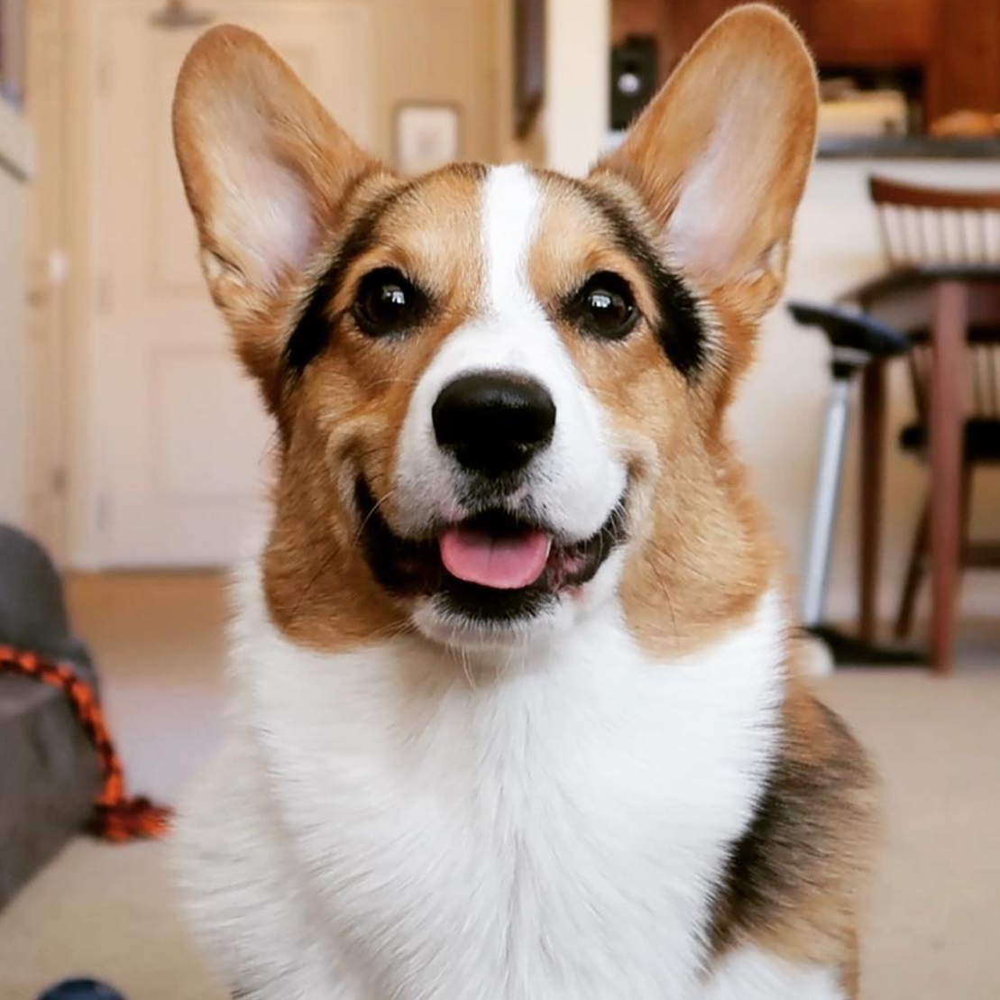
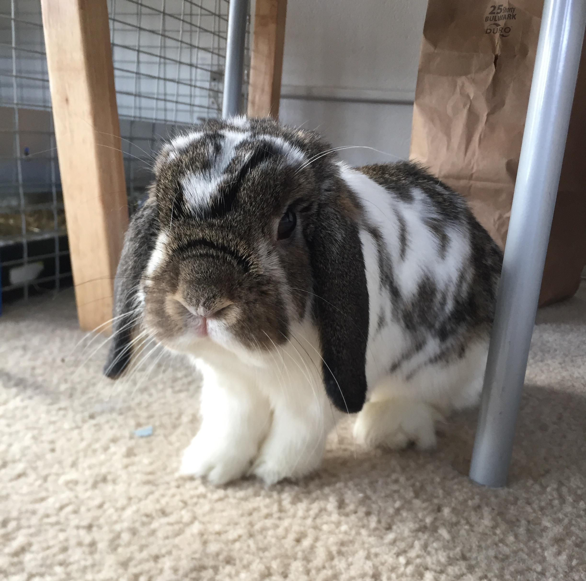
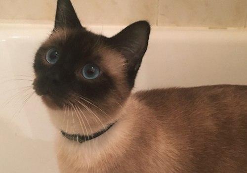
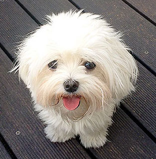
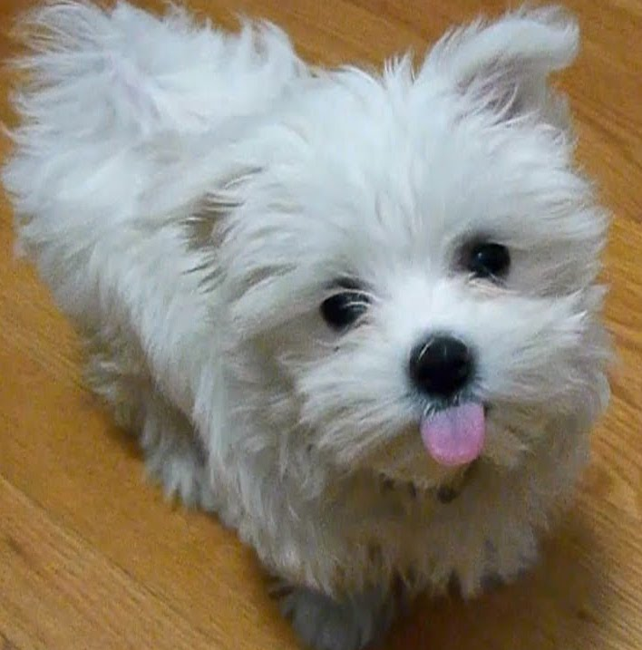
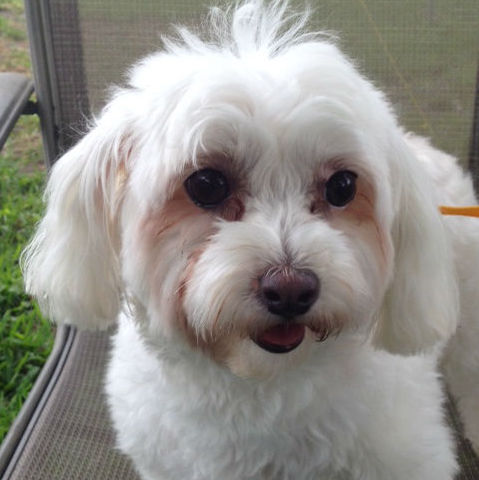
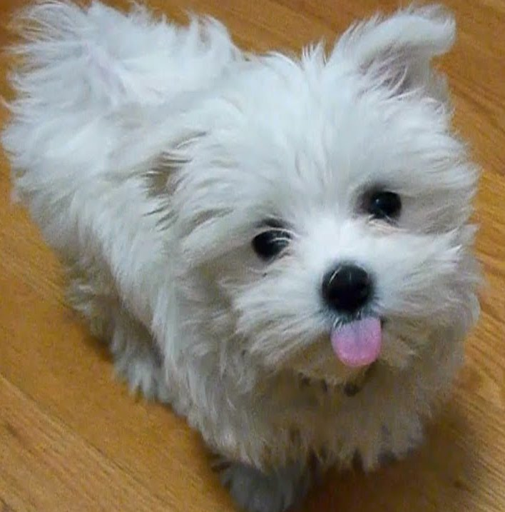
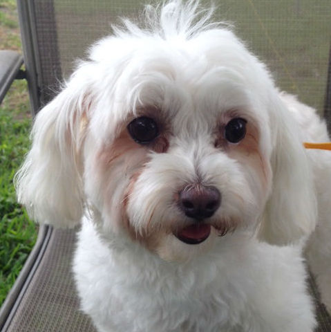

Gatsby
Male, 1 y/o, Corgi


Herbert
Male, 2 y/o, Holland Lop

Ping
Female, 9 m/o, Siamese

Benjamin
Male, 8 m/o, Maltese
Male, 1 y/o, Corgi
Male, 2 y/o, Holland Lop
Female, 9 m/o, Siamese
Male, 8 m/o, Maltese
 


